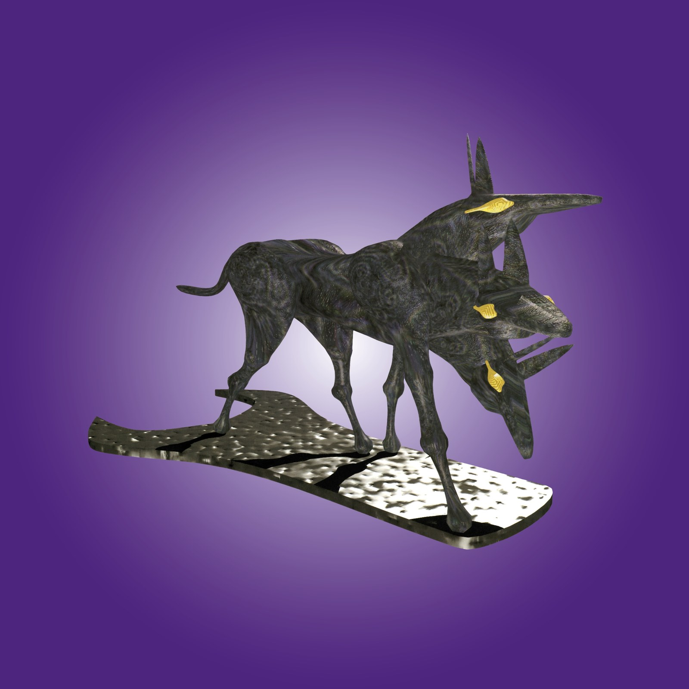
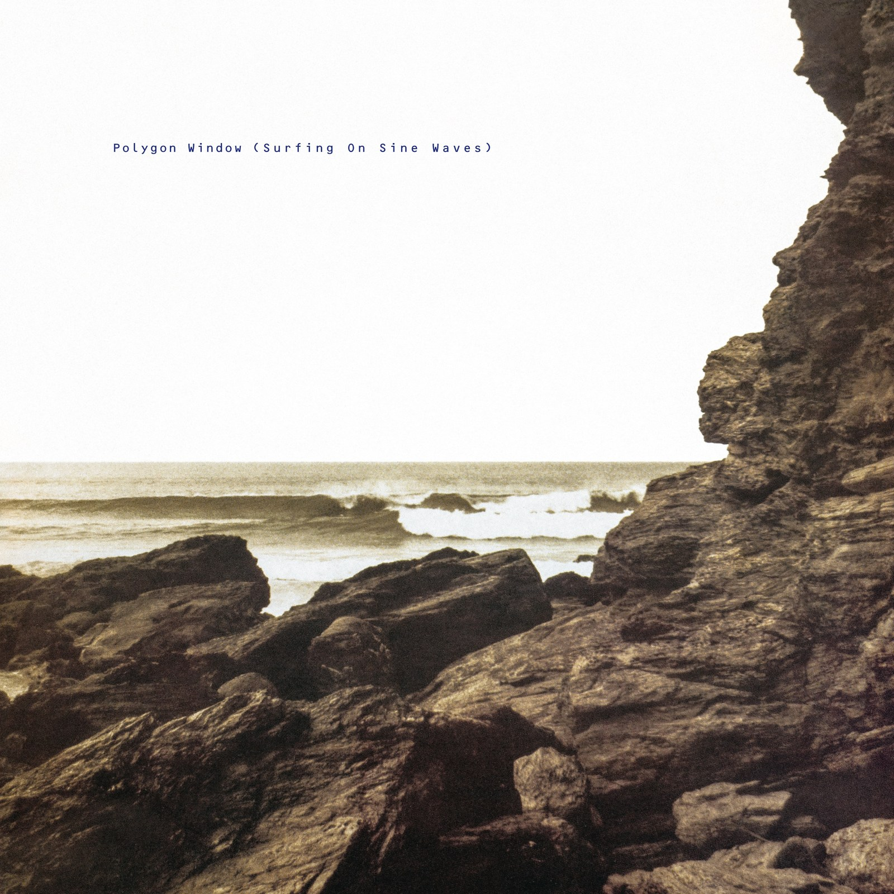

CRVI000007The Black Dog - Spanners
Designed by Black Dog Productions, Richard Burridge, Think 1 · Warp Records · 1995
Designed by Black Dog Productions, Richard Burridge, Think 1 · Warp Records · 1995

CRVI000008Boards Of Canada - Music Has The Right To Children
Designed by Boards Of Canada · Warp Records · 1998
Designed by Boards Of Canada · Warp Records · 1998

CRVI000010Flying Lotus - Los Angeles
Artwork by Commonwealth · Warp Records
Artwork by Commonwealth · Warp Records

CRVI000019Two Lone Swordsmen - Stay Down
Designed by Haywire, James Woodbourne · Warp Records · 1998
Designed by Haywire, James Woodbourne · Warp Records · 1998

CRVI000045Various - Artificial Intelligence II
Artwork by Phil Wolstenholme, The Designers Republic · Warp Records · 1994
Artwork by Phil Wolstenholme, The Designers Republic · Warp Records · 1994

CRVI000048Oneohtrix Point Never - R Plus Seven
Designed by Robert Beatty · Warp Records · 2013
Designed by Robert Beatty · Warp Records · 2013

CRVI000054Autechre - Amber
Designed by The Designers Republic · Warp Records · 1994
Designed by The Designers Republic · Warp Records · 1994

CRVI000055Polygon Window - Surfing on Sine Waves
Artwork by The Designers Republic · Warp Records · 1992
Artwork by The Designers Republic · Warp Records · 1992

CRVI000057B12 - Time Tourist
Designed by The Designers Republic, Trevor Webb · Warp Records · 1996
Designed by The Designers Republic, Trevor Webb · Warp Records · 1996

CRVI000058Flying Lotus - Pattern +Grid World
Designed by Theo Ellsworth · Warp Records · 2010
Designed by Theo Ellsworth · Warp Records · 2010

CRVI000094Various - Artificial Intelligence
Designer unknown · Warp Records · 1992
Designer unknown · Warp Records · 1992